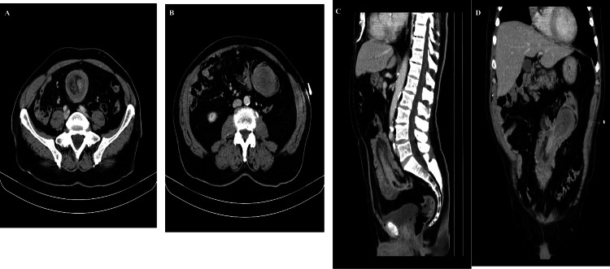
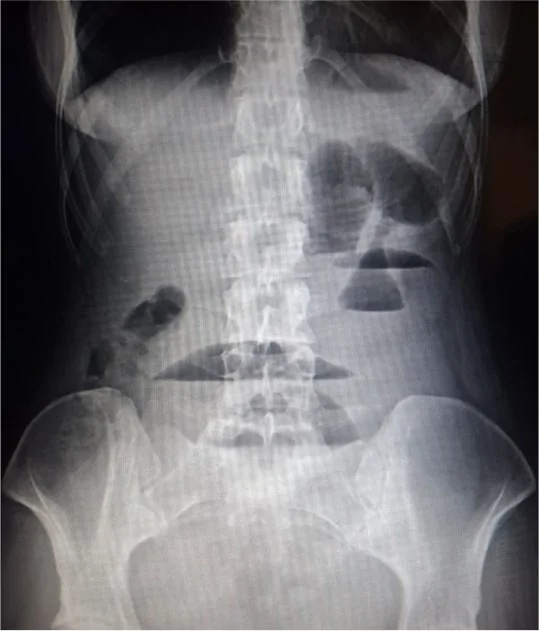

Кишечная непроходимость
Определение и классификация кишечной непроходимости
Кишечная непроходимость — это синдром, при котором нарушается или полностью прекращается продвижение содержимого по пищеварительному тракту. Именно синдром, а не отдельная болезнь: за этим словом стоит целый спектр причин, механизмов и форм, которые требуют разного лечения. Среди всех острых хирургических заболеваний органов брюшной полости непроходимость наблюдается в 3,5—9 % случаев. Цифры скромные на первый взгляд, но за ними — одна из самых тяжёлых неотложных ситуаций в хирургии.[Кузин, с. 694]
Кажется, что непроходимость — это всегда что-то механическое: кишку закрыло, и содержимое встало. На деле существует целый класс непроходимости, при которой просвет кишки остаётся совершенно свободным, а движения нет — потому что стенка кишки перестала сокращаться или, напротив, судорожно спазмировалась. Это и есть главное разделение: механическая непроходимость — когда движению содержимого мешает физическое препятствие, и динамическая непроходимость — когда причина в нарушении двигательной функции самой кишки.
Внутри механической непроходимости выделяют три подвида. Обтурационная непроходимость — это закупорка просвета без сдавления брыжейки и её сосудов: кишку перекрывает опухоль, каловый камень, желчный конкремент, рубцовая стриктура или давление снаружи — киста, соседняя опухоль, спайки. Кровоснабжение стенки при этом долго остаётся сохранным, и патологические изменения нарастают медленнее. Странгуляционная непроходимость — принципиально другая: здесь одновременно пережимается и просвет кишки, и её брыжейка вместе с сосудами и нервами. Так происходит при завороте, узлообразовании, ущемлении в грыжевых воротах. Прекращение кровоснабжения быстро ведёт к некрозу стенки — отсюда стремительное течение и высокая летальность. Наконец, сочетанная непроходимость объединяет оба механизма одновременно: классический пример — инвагинация, когда внедрившаяся петля закупоривает просвет (обтурация), а её брыжейка сдавливается (странгуляция).[Кузин, с. 694]
Динамическая непроходимость делится иначе. Паралитическая непроходимость возникает при значительном угнетении или полном прекращении перистальтики — кишка расслаблена, тонус мышечного слоя падает, содержимое стоит без движения. Её вызывают перитонит, травма, интоксикация, метаболические нарушения — гипокалиемия, уремическая или диабетическая кома. Спастическая непроходимость — явление противоположное: стойкий судорожный спазм стенки без органического препятствия; её провоцируют аскариды, отравление свинцом, плоскостные спайки, печёночная порфирия.[Кузин, с. 695]
Помимо вида, непроходимость делят по двум другим осям. По уровню препятствия: высокая непроходимость — тонкокишечная, и низкая непроходимость — толстокишечная. Уровень определяет клиническую картину: при высокой непроходимости рвота возникает рано и многократна, при низкой — запаздывает, зато вздутие живота достигает огромных размеров. По степени закрытия просвета: полная непроходимость — пассаж прекращён полностью, и частичная непроходимость — просвет сужен, но часть содержимого всё же проходит. При частичной форме клиника стёртая, и именно здесь диагноз чаще всего запаздывает.
Посмотрите на эту классификацию в Таблице 1 — она сводит все три оси вместе и помогает увидеть, какие сочетания встречаются на практике.
| Вид | Подвид | Уровень | Степень закрытия просвета | Краткая характеристика |
|---|---|---|---|---|
| Механическая | Обтурационная | Высокая (тонкокишечная) или низкая (толстокишечная) | Полная или частичная | Просвет закрыт без сдавления сосудов; некроз развивается медленно |
| Странгуляционная | Высокая или низкая | Полная или частичная | Просвет закрыт + сдавлена брыжейка с сосудами; некроз быстрый; летальность 20 % и более | |
| Сочетанная (инвагинация) | Чаще высокая | Полная или частичная | Одновременно обтурация и странгуляция; внедрение петли в петлю | |
| Динамическая | Паралитическая | Диффузная (весь кишечник) | Функциональная — просвет свободен | Перистальтика угнетена или отсутствует; частая причина — перитонит, интоксикация |
| Спастическая | Диффузная или сегментарная | Функциональная — просвет свободен | Стойкий спазм стенки; причины — аскариды, отравление свинцом, порфирия |
Как видно из таблицы, динамическая непроходимость стоит особняком: просвет кишки при ней не закрыт ни опухолью, ни заворотом — проблема целиком в двигательной функции. Это принципиально важно, потому что тактика лечения механической и динамической форм различается: при механической нужна операция, при динамической — в первую очередь лечение основного заболевания. Среди механических форм ключевая строка таблицы — странгуляционная: она составляет 40—50 % всех наблюдений острой непроходимости, а средняя послеоперационная летальность при ней достигает 20 % и более. При узлообразовании — одном из вариантов странгуляции — летальность ещё выше. Главная причина таких цифр — поздняя обращаемость и запоздалая диагностика, а не сложность самой операции.[Кузин, с. 700]
Стоит понимать и патофизическую основу этих чисел. При любой форме непроходимости в приводящую петлю продолжают поступать пищеварительные соки — желудочный, кишечный, панкреатический, желчь, слюна — суммарно около 6—8 л в сутки. Они скапливаются выше препятствия, растягивают стенку, нарушают её кровоснабжение. При обтурационной форме этот процесс развивается медленнее. При странгуляционной к нему немедленно добавляется ишемия сдавленной петли — и некроз наступает в разы быстрее. Именно поэтому странгуляцию нельзя лечить выжидательно: счёт идёт на часы.[Кузин, с. 695]
Патогенез кишечной непроходимости
Патологические изменения при непроходимости развиваются по-разному в зависимости от её формы — и это различие принципиально, потому что определяет скорость катастрофы.[Кузин, с. 695]
При обтурационной непроходимости кровоснабжение кишки поначалу не страдает. Препятствие перекрывает пассаж химуса, но стенка кишки выше места обтурации получает кровь в прежнем объёме. Именно поэтому изменения развиваются медленнее, чем при странгуляционной форме. Между тем пищеварительные железы продолжают работу: желудочный, кишечный и панкреатический сок, желчь, слюна — всего около 6—8 л в сутки — поступают в приводящую петлю и не находят выхода. Петля растягивается, давление в её просвете нарастает, моторика угасает. Растянутая стенка пропускает жидкость из просвета в ткани, часть её уходит в свободную брюшную полость. Так формируется депо жидкости, которое организм уже не контролирует.[Кузин, с. 695]
При странгуляционной непроходимости сдавление сосудов и нервов брыжейки происходит одновременно с нарушением пассажа. Венозный отток нарушается раньше артериального: стенка кишки отекает, приобретает цианотичный, затем сине-чёрный оттенок, появляются субсерозные кровоизлияния. Некроз начинается со слизистой оболочки — самого уязвимого слоя — и распространяется в глубину. Если кровоснабжение не восстановить, исход один: гангрена ущемлённой петли и анаэробно-аэробный перитонит. Послеоперационная летальность при странгуляционной непроходимости достигает 20 % и более — главным образом из-за позднего обращения больных и запоздалой диагностики. При узлообразовании, когда в странгуляцию вовлекаются одновременно несколько петель, летальность остаётся особенно высокой.
Теперь посмотрите, к чему приводят оба механизма на уровне всего организма. Жидкость, которую теряет кишка в просвет и брюшную полость, изымается из кровеносного русла. Объём циркулирующей крови падает — развивается гиповолемия, то есть дефицит внутрисосудистой жидкости. Кровь при этом сгущается: концентрация эритроцитов возрастает до 5—6 · 10⁹/л, повышаются уровень гемоглобина и гематокрит — это гемоконцентрация, сгущение крови вследствие потери её жидкой части. Не будь у организма механизма централизации кровообращения, критическое снижение давления наступало бы немедленно; централизация выигрывает время, но не устраняет дефицит.
Особую роль играет уровень препятствия. При высокой, тонкокишечной непроходимости потери жидкости и электролитов наступают быстрее и объёмнее, чем при низкой. Вместе с желудочным соком теряется соляная кислота — концентрация хлоридов и водородных ионов в крови падает. Возникает метаболический алкалоз — смещение кислотно-основного равновесия в щелочную сторону вследствие избыточной потери кислых эквивалентов. Параллельно снижается почасовой диурез: почки, отвечая на гиповолемию, переходят в режим экономии воды — развивается олигурия.[Кузин, с. 696]
По мере нарастания интоксикации — из некротизирующейся стенки кишки в кровоток поступают бактерии и их токсины — страдают последовательно почки, лёгкие, сердце, печень. Так складывается полиорганная недостаточность: одновременное нарушение функции двух и более органов-мишеней, при котором организм уже не способен поддерживать гомеостаз без внешней поддержки. Изменения во внутренних органах на этом этапе обусловлены проявлениями гиповолемического шока и метаболических расстройств и носят уже неспецифический характер.[Кузин, с. 711]
Таким образом, цепочка разворачивается следующим образом: обтурация или странгуляция → застой и растяжение приводящей петли → потеря жидкости и электролитов в просвет и брюшную полость → гемоконцентрация и гиповолемия → при высокой непроходимости метаболический алкалоз и олигурия → на фоне странгуляции некроз кишки и поступление токсинов в кровь → полиорганная недостаточность как финальный общий путь обеих форм.
Динамическая непроходимость: паралитическая и спастическая
Динамическая непроходимость — это сбой моторики без физического препятствия в просвете кишки. Она делится на две противоположные по механизму формы: мышца либо перестаёт работать совсем, либо, напротив, сжимается и не отпускает. Первое — паралитическая форма, второе — спастическая. Тактика при них разная, и перепутать их — значит лечить не то.
Паралитический илеус — то есть попросту паралич кишечной мускулатуры, при котором перистальтическая волна угасает или исчезает полностью, — развивается чаще всего на фоне перитонита. Воспаление подавляет ауэрбахово и мейснерово нервные сплетения в стенке кишки, тонус мышечного слоя падает, пропульсивное движение содержимого прекращается. Помимо перитонита, к тому же результату приводят травмы и травматичные операции, интоксикации, тромбоз брыжеечных сосудов, а также метаболические нарушения — в частности, гипокалиемия. Хирургическое вмешательство при паралитической форме показано лишь тогда, когда она возникла на фоне перитонита, тромбоза или эмболии брыжеечных сосудов; в остальных случаях лечение консервативное.[Кузин, с. 712]
Клиническая картина паралитического илеуса складывается из тупых, распирающих, постоянных болей без чёткой локализации — схваткообразный компонент, характерный для механической непроходимости, здесь обычно отсутствует. Живот равномерно вздут. При аускультации перистальтические шумы с самого начала ослаблены или не слышны вовсе — это и есть ключевой признак, отличающий паралитическую форму от механической. В стадии субкомпенсации и декомпенсации перитонита кишечные шумы не выслушиваются совсем: в литературе этот феномен называют симптомом «гробовой тишины».[Кузин, с. 711]
Спастическая непроходимость — сравнительно редкий вариант динамической непроходимости — возникает иначе: не из-за угасания моторики, а из-за её патологического усиления в одном участке кишки. Стойкий локальный спазм мышечного слоя перекрывает пассаж содержимого; длительность спазма варьирует от нескольких минут до нескольких часов. Причины — аскаридоз, отравление свинцом, печёночная порфирия — то есть попросту наследственное нарушение синтеза гема, при котором в крови накапливаются токсичные предшественники порфиринов и раздражают нервную систему кишечника, — а также плоскостные спайки в брюшной полости.[Кузин, с. 712]
Болевой синдром при спастической форме резко отличается: боли схваткообразные, сильные, висцеральные, без определённой локализации; в момент приступа больной мечется, не находит положения. Живот при этом не вздут, а нередко втянут и принимает ладьевидную форму. Задержка стула и газов наблюдается не у всех и редко бывает стойкой. Лечение — только консервативное: спазмолитики, устранение основной причины.[Кузин, с. 712]
Посмотрите на сравнительную таблицу ниже — она сводит четыре ключевых признака в одном месте, чтобы было легче удержать в голове, что с чем сравнивать.
| Признак | Паралитическая | Спастическая |
|---|---|---|
| Основные причины | Перитонит (главная), травма, интоксикация, тромбоз брыжеечных сосудов, гипокалиемия | Аскаридоз, отравление свинцом, печёночная порфирия, плоскостные спайки |
| Болевой синдром | Постоянные, тупые, распирающие; без чёткой локализации; схватки отсутствуют | Схваткообразные, сильные, висцеральные; без чёткой локализации; больной мечется |
| Аускультация живота | Перистальтика с самого начала ослаблена или отсутствует; при перитоните — «гробовая тишина» | Перистальтика сохранена или усилена в момент спазма |
| Лечебная тактика | Консервативная; операция только при перитоните, тромбозе или эмболии брыжеечных сосудов | Только консервативная: спазмолитики, лечение основной причины |
Как видите в таблице, самая важная строка — аускультация: именно она позволяет разграничить эти две формы у постели больного, не прибегая к инструментальным методам. При паралитическом илеусе тишина нарастает с самого начала и при развитии перитонита становится абсолютной. При спастической непроходимости кишечник шумит — он сокращается, просто сокращается не туда. Это принципиально, потому что ослабленная перистальтика при паралитической форме — признак, который ни при одной другой форме непроходимости не встречается так рано и так закономерно.
Живот тоже ведёт себя по-разному: при паралитической непроходимости он равномерно вздут, при спастической — обычной конфигурации или ладьевидно втянут. Это различие заметно уже при осмотре, до пальпации. Рвота при паралитической форме наблюдается реже, чем при механической, — но при развитии перитонита может стать многократной. При спастической форме диспепсические расстройства нехарактерны.[Кузин, с. 711]
Главное, что следует вынести из этого раздела: обе формы динамической непроходимости лечат консервативно — за единственным исключением паралитического илеуса, осложнённого перитонитом или сосудистой катастрофой в брыжейке, где промедление с операцией недопустимо.
Обтурационная непроходимость: опухоль, желчный камень, каловый завал
Обтурационная непроходимость — это механическая непроходимость, при которой просвет кишки перекрыт, но брыжейка и сосуды остаются интактными. Именно отсутствие сосудистого сдавления отличает её от странгуляционной: кровоснабжение стенки кишки сохранено, некроз не грозит в первые часы, и патологические изменения развиваются не так быстро, как при странгуляции.[Кузин, с. 696]
Причин обтурации несколько, и их удобно разделить по расположению относительно стенки кишки. Просвет может быть перекрыт изнутри — плотными каловыми «камнями», безоарами, крупными желчными камнями, провалившимися в кишку через пузырно-кишечную фистулу, а также инородными телами. Изнутри стенки перекрывают просвет опухоли и крупные полипы, рубцовые стриктуры. Наконец, обтурация бывает снаружи: кисты, большие опухоли соседних органов, фиброзные тяжи и спайки сдавливают кишку, не проникая в её просвет.[Кузин, с. 694]
Среди всех этих причин у взрослых первое место занимает рак ободочной кишки. Непроходимость как осложнение возникает у 10—15 % онкологических больных с локализацией опухоли в толстой кишке. Особенно показательна левая половина ободочной и сигмовидная кишка: их просвет уже, содержимое плотнее, и растущая опухоль закрывает его постепенно — неделями и месяцами. Именно поэтому клиника нарастает медленно: сначала запоры, лентовидный кал, вздутие, затем — полная задержка стула и газов. Пациент нередко откладывает визит к врачу, принимая симптомы за «кишечное расстройство».[Кузин, с. 704]
Представьте кран, который закрывают не рывком, а медленно поворачивая вентиль: поток сначала слабеет, потом прекращается. Именно так ведёт себя просвет при опухолевом росте — и именно поэтому частичная непроходимость долго остаётся незамеченной, пока не переходит в полную.
Желчнокаменная непроходимость — особый вариант обтурации изнутри. Крупный желчный камень, как правило диаметром более 2,5 см, пролёживает свищ между желчным пузырём и кишкой, попадает в просвет и мигрирует до терминального отдела подвздошной кишки, где её диаметр наименьший и камень застревает. Картина разворачивается остро, хотя сама желчнокаменная болезнь существовала годами. Лечение — хирургическое: декомпрессия кишечника, энтеротомия дистальнее конкремента и его удаление; холецистэктомия выполняется по показаниям в последующем.[Кузин, с. 705]
Каловый завал, или обтурация каловыми «конкрементами», — удел преимущественно пожилых больных с хроническим колитом и длительными запорами. Предрасполагают аномалии развития: мегаколон, мегасигма, врождённые мембраны слизистой. Конкременты образуются в толстой кишке, вызывают схваткообразные боли, задержку стула и газов, резкое вздутие ободочной кишки. Прямая кишка при этом пуста и раздута баллонообразно — характерный признак низкой непроходимости. В большинстве случаев достаточно сифонных и масляных клизм, пальцевого или эндоскопического разрушения конкрементов; операция — колотомия с временной колостомой — нужна редко, лишь при неэффективности консервативных мер.[Кузин, с. 706]
Общая черта всех форм обтурационной непроходимости — постепенное нарастание симптомов при сохранённом кровоснабжении кишечной стенки. Приводящая петля переполняется пищеварительными соками — как уже говорилось в разделе о патогенезе, их суммарный объём достигает около 6—8 л в сутки — и растягивается, но некроза первое время нет. Это принципиально меняет прогноз: при своевременной операции стенка кишки жизнеспособна, и хирург работает в несравнимо лучших условиях, чем при странгуляции. Главное, что следует вынести из этого раздела: обтурационная непроходимость даёт время — но только до тех пор, пока давление в приводящей петле не нарушит кровоток в стенке вторично. Затягивать с операцией опасно даже при этой, внешне более «мягкой», форме.[Кузин, с. 695]
Странгуляционная непроходимость: заворот, узлообразование, ущемление
Причины механической непроходимости удобнее всего держать в голове разделёнными на две группы — обтурационную и странгуляционную, — потому что механизм повреждения кишки и скорость катастрофы у них принципиально разные. Посмотрите на таблицу ниже: в ней собраны частые и редкие причины каждой формы — и сразу станет ясно, где пересекаются пути хирурга чаще всего.
| Форма непроходимости | Частые причины | Редкие причины |
|---|---|---|
| Обтурационная | Злокачественные опухоли толстой кишки (чаще сигмовидной), спаечный процесс без странгуляции | Желчные камни (билиодигестивный свищ), копролиты, инородные тела, клубок аскарид |
| Странгуляционная | Спаечная болезнь со сдавлением брыжейки, ущемлённые грыжи, заворот кишки | Узлообразование, дивертикул Меккеля (заворот на длинной ножке, инвагинация, странгуляция тяжом) |
Обтурационная непроходимость возникает, когда просвет кишки перекрыт изнутри или снаружи, но брыжейка и сосуды целы. Самая частая причина — злокачественная опухоль толстой кишки: как уже говорилось в разделе об обтурационной форме, она даёт непроходимость у 10—15 % онкологических больных с поражением ободочной кишки. Гораздо реже виновником становится крупный желчный камень. Чтобы он вообще попал в кишку, сначала должен образоваться билиодигестивный свищ — патологическое соустье между желчным пузырём и кишечником, через которое конкремент диаметром более 2,5 см пролёживает стенку и мигрирует в просвет. Ещё реже встречаются копролиты, инородные тела и клубки аскарид — они блокируют просвет механически, не затрагивая кровоснабжение стенки.[Кузин, с. 666]
Странгуляционная непроходимость устроена иначе: здесь одновременно пережимается и просвет кишки, и её брыжейка с сосудами. Именно поэтому некроз развивается быстро, а послеоперационная летальность при этой форме достигает 20 % и более — главным образом из-за позднего обращения больных к врачу. Среди причин лидируют спаечная болезнь, при которой плотный тяж перекидывается через петлю и пережимает её вместе с брыжейкой, и ущемлённые грыжи — паховые, бедренные, послеоперационные.[Кузин, с. 709]
Заворот кишки — поворот петли вокруг оси брыжейки на 180° и более, при котором пережимаются оба конца петли и питающие сосуды одновременно. Чаще всего заворачивается сигмовидная ободочная кишка, реже — тонкая и слепая. Узлообразование — ещё более тяжёлый вариант: две петли скручиваются между собой, и в странгуляцию вовлекается сразу большой объём кишки. Именно поэтому летальность при нём особенно высока.[Кузин, с. 706]
Отдельного разбора заслуживает дивертикул Меккеля — врождённый выпячивание стенки подвздошной кишки, остаток желточного протока. Он встречается у 2—5 % людей, причём мужчины страдают в полтора раза чаще женщин (соотношение 3:2). Дивертикул располагается на подвздошной кишке на расстоянии от 10 до 150 см от илеоцекального угла: в среднем 40 см у детей и 50 см у взрослых. Размеры варьируют широко. Стенка дивертикула устроена так же, как стенка подвздошной кишки, однако у 20—30 % больных в ней обнаруживают гетеротопические островки слизистой желудка, двенадцатиперстной кишки или ткани поджелудочной железы. У большинства людей дивертикул никак не проявляется, но при наличии гетеротопии осложнения возникают у 15—20 % больных. Среди этих осложнений непроходимость занимает третье место — после кровотечений из пептических язв (25—30 %) и острого дивертикулита (25 %).[Кузин, с. 608]
Дивертикул Меккеля может вызвать непроходимость тремя путями. Первый — инвагинация: дивертикул выворачивается внутрь кишки и тянет за собой стенку, образуя инвагинат. Второй — заворот кишки вокруг длинной ножки дивертикула: петля перекручивается, и брыжейка пережимается. Третий — странгуляция фиброзным тяжом: облитерированный остаток желточного протока натягивается как струна и ущемляет соседнюю петлю. Все три варианта относятся к странгуляционным, то есть с нарушением кровоснабжения кишечной стенки.
Теперь — разбор случая, три шага.
Что видит врач. Пациент поступает с резкими схваткообразными болями, которые начались внезапно, без продромы. Живот умеренно вздут, перистальтика при аускультации поначалу усилена, затем стихает. Уже через несколько часов появляется постоянная боль на фоне схваток — признак нарастающей ишемии стенки. В анамнезе — операция на органах брюшной полости несколько лет назад.
Что из этого выводит. Внезапное начало, схваткообразный характер с быстрым переходом в постоянную боль и операция в анамнезе — это картина странгуляционной, а не обтурационной непроходимости. При обтурационной симптомы нарастают постепенно, некроз стенки развивается медленно. Здесь же ишемия опережает растяжение кишки — значит, брыжейка сдавлена. Наиболее вероятная причина у оперированного пациента — спаечная странгуляция.[Кузин, с. 711]
Что делает дальше. Хирург не тратит время на длительное консервативное лечение: при признаках странгуляции операция выполняется экстренно. Промедление прямо переводит пациента из группы с летальностью 3,5 % (операция в первые 6 ч) в группу с летальностью 24,7 % и более (операция после 24 ч). На операции оценивают жизнеспособность кишки: цвет, перистальтику, пульсацию сосудов; нежизнеспособный участок резецируют с отступом не менее 40—60 см проксимальнее в сторону приводящей петли.[Кузин, с. 707]
Как видно из таблицы, обтурационная и странгуляционная формы различаются не только причиной, но и скоростью: при обтурации у врача есть часы на диагностику и подготовку, при странгуляции счёт идёт буквально на часы до некроза. Именно поэтому любой признак сдавления брыжейки — постоянная боль поверх схваток, быстрое нарастание интоксикации, исчезновение перистальтики — должен немедленно склонять чашу весов в сторону операционного стола, а не зала для консервативного наблюдения.
Спаечная непроходимость
Среди всех форм механической непроходимости спаечная занимает особое место — не по тяжести единичного приступа, а по частоте. Она лидирует в структуре госпитальных случаев непроходимости кишечника, и за этим фактом стоит простая арифметика: операций на брюшной полости становится больше, а каждая из них оставляет потенциал для спайкообразования.[Кузин, с. 694]
Спаечная болезнь — это хронический патологический процесс, при котором в брюшной полости формируются соединительнотканные тяжи между петлями кишечника, сальником, брюшиной и органами. Они возникают как ответ на любое механическое, химическое или инфекционное раздражение брюшины: лапаротомию, перитонит, кровоизлияние, тальк от хирургических перчаток. Пока спайки остаются бессимптомными, о болезни говорить рано; когда они нарушают пассаж кишечного содержимого, возникает её главное осложнение — непроходимость.[лекция, с. 43]
Спайки реализуют непроходимость двумя принципиально разными путями. Первый — обтурационный: плоскостная спайка снаружи пережимает кишку, как струна пережимает шланг, просвет сужается или перекрывается, кровоснабжение стенки поначалу не страдает. Приводящая петля переполняется содержимым, развивается картина, описанная в разделе о патогенезе, но некроз наступает медленно. Второй путь — странгуляционный: петля кишки перегибается через тяж или вворачивается в спаечное «окно», и вместе с просветом сдавливаются сосуды брыжейки. Здесь ишемия опережает всё остальное. Именно этот вариант опасен быстрым некрозом и определяет неблагоприятный прогноз: послеоперационная летальность при странгуляционной непроходимости достигает 20 % и более — главным образом из-за позднего обращения больных и запоздалой диагностики.
Теперь посмотрите на соотношение двух чисел, которое имеет прямой практический смысл. При обтурационной спаечной непроходимости у врача есть часы для консервативного лечения; при странгуляционной счёт идёт на десятки минут, потому что некроз слизистой оболочки распространяется по приводящему отрезку на 40—60 см, а по отводящему — не более чем на 10 см. Разница в протяжённости поражения — шестикратная. Именно она объясняет, почему при странгуляционном варианте промедление с операцией даже на 2—3 часа меняет объём резекции и прогноз кардинально. Число говорит не само по себе — оно диктует темп принятия решений.[Кузин, с. 707]
Тактика строится на разграничении этих двух вариантов. При обтурационной форме без признаков перитонита и без нарастания боли допустимо начать с консервативного лечения: назогастральная декомпрессия, инфузионная терапия, коррекция гиповолемии и электролитных нарушений. Если в течение 2—4 часов динамики нет — вздутие не уменьшается, боль не стихает, рентгенологически уровни жидкости не исчезают — выжидание становится ошибкой.
При странгуляционной форме консервативный этап сводится к минимуму: только предоперационная подготовка — инфузия, декомпрессия желудка, катетеризация — и срочное вмешательство. Ориентиры, указывающие на странгуляцию: постоянная (не только схваткообразная) боль, локальная болезненность и напряжение брюшной стенки, быстрый подъём температуры и лейкоцитоза, геморрагический характер экссудата при пункции. Главное, что следует вынести из этого раздела: обтурационная спаечная непроходимость даёт время для пробного консервативного лечения, странгуляционная — нет; промедление здесь измеряется не часами, а сантиметрами некроза.
На операции рассекают спайки, устраняют деформацию кишки, оценивают жизнеспособность петель. При некрозе — резекция с анастомозом; линию пересечения ведут на 40—60 см проксимальнее и не менее чем на 10—15 см дистальнее зоны некроза. После операции часть хирургов выполняет назоинтестинальную интубацию для декомпрессии и профилактики раннего рецидива.[Кузин, с. 707]
Инвагинация кишечника
Инвагинация — это внедрение одного отрезка кишки в просвет другого с образованием так называемого инвагината: цилиндрической структуры, состоящей из трёх кишечных трубок, переходящих одна в другую. Наружная трубка называется воспринимающей, или влагалищем; средняя и внутренняя — образующими. Место, где средний цилиндр переходит во внутренний, — это головка инвагината, а переход наружного цилиндра в средний — шейка. Представьте себе, как пальцы перчатки заворачиваются внутрь: именно так одна кишка уходит в другую, при этом шейка удерживает всю конструкцию снаружи, а головка продвигается вперёд по ходу перистальтики. В редких случаях инвагинат может включать пять и даже семь слоёв.[Кузин, с. 709]

Два механизма делают инвагинацию особенно опасной. Первый — обтурационный компонент: инвагинат перекрывает просвет воспринимающей кишки, и содержимое не может двигаться дальше, как при любой другой обтурационной непроходимости. Второй — странгуляционный компонент: вместе с кишкой внутрь влагалища втягивается и брыжейка, её сосуды и нервы сдавливаются в шейке инвагината, кровообращение в среднем и внутреннем цилиндрах нарушается, и развивается некроз. Наружный цилиндр, как правило, некрозу не подвергается. Именно сочетание обоих механизмов — и закрытия просвета, и сосудистого сдавления — служит основанием относить инвагинацию к сочетанной (смешанной) форме механической непроходимости.[Кузин, с. 709]
Кажется, что инвагинация — болезнь взрослых с какой-нибудь опухолью или спайкой: раз кишка внедряется в кишку, должна быть механическая причина. На деле до 75 % всех случаев приходится на детей, причём в первые месяцы жизни болезнь возникает без всякой органической причины. Такую форму называют первичной, или идиопатической инвагинацией: в её основе — дискоординация кишечной моторики с преобладанием циркулярных сокращений над продольными, в результате чего один участок кишки буквально вталкивается в следующий. У детей старше года и у взрослых идиопатическая инвагинация редка. Здесь причина почти всегда органическая: полип или опухоль на ножке, гематома стенки, воспалительный инфильтрат, дивертикул Меккеля или экзофитный рак ободочной кишки — всё это выступает «поршнем», который перистальтика проталкивает дистально вместе с вышележащей кишкой. Такую форму называют вторичной инвагинацией.
По нескольким признакам инвагинацию делят на группы. По этиологии — первичная и вторичная. По направлению — изоперистальтическая инвагинация, когда внедрение идёт по ходу перистальтики (подавляющее большинство), и антиперистальтическая — против хода. По числу — одиночная и множественная. По числу цилиндров — чаще три, реже пять–семь. По локализации выделяют четыре основные формы, и именно они определяют скорость некроза и клиническую картину.
Тонко-тонкокишечная инвагинация встречается примерно в 3 % случаев. Тонкая кишка имеет длинную брыжейку и подвижна, но именно поэтому внедрение происходит быстро, а сдавление сосудов выражено резко: некроз развивается уже через 12–24 ч. Боли носят непрерывный характер — без светлого промежутка, то есть без периода временного облегчения. Рвота многократная, с желчью, кровь в стуле появляется лишь через 12–24 ч. Инвагинат прощупывается в околопупочной области.[Кузин, с. 267]
Самая частая форма — илеоцекальная (подвздошно-слепокишечная) инвагинация, на которую приходится около 90 % всех случаев. Здесь подвздошная кишка внедряется в слепую через баугиниеву заслонку. Анатомические условия для этого почти идеальны: баугиниева заслонка пропускает кишку в одном направлении, сдерживая обратный ход. Некроз при этой форме наступает быстрее, чем при тонко-тонкокишечной, — в течение 6–12 ч, потому что брыжейка зажимается в узком просвете слепой кишки.
При дальнейшем продвижении подвздошная кишка вместе со слепой переходит в восходящую ободочную — формируется подвздошно-слепо-ободочная (тонко-толстокишечная) инвагинация. Самостоятельный вариант — слепо-ободочная инвагинация, при которой в восходящую кишку внедряется уже сама слепая. Здесь толстокишечная стенка толще и кровоснабжение надёжнее, поэтому некроз развивается позже — через 36–48 ч. Западение правой подвздошной области при этих формах объясняется тем, что слепая кишка уходит вверх: это и есть симптом Дансе — один из важнейших признаков илеоцекальной и слепо-ободочной инвагинации.[Кузин, с. 709]
Наконец, толсто-толстокишечная инвагинация — редкая, около 3 % случаев, — когда один отдел ободочной кишки внедряется в другой и при достаточной длине инвагинат может выпасть через прямую кишку наружу. Это особая форма, и здесь важна дифференцировка с выпадением прямой кишки: если провести пальцем между выпавшим образованием и стенкой анального канала, при инвагинации обнаружится бороздка — замкнутое пространство между стенками цилиндров, тогда как при истинном выпадении прямой кишки такой бороздки нет. Некроз при толсто-толстокишечной форме наступает через 36–48 ч.[лекция, с. 20]
Клинически инвагинация определяется триадой инвагинации: пальпируемый инвагинат, схваткообразные боли и кровь в стуле — последняя появляется за счёт венозного застоя и пропитывания слизистой кровью. При подвздошно-слепо-ободочной и слепо-ободочной формах дополнительно выявляется симптом Дансе. Ректальное исследование обнаруживает кровь на перчатке даже тогда, когда видимого стула ещё нет.[лекция, с. 23]
Диагностику строят поэтапно. Анамнез и физикальный осмотр задают направление: возраст ребёнка, характер болей, пальпация инвагината, симптом Дансе, ректальное исследование. Следующий шаг — УЗИ. На поперечном срезе инвагинат даёт характерную картину: концентрические кольца разной эхогенности — симптом мишени, или псевдопочки. По продольному срезу хорошо видны слои цилиндров. Обзорная рентгенография брюшной полости покажет признаки непроходимости, а при перфорации — свободный газ. Ирригоскопия при илеоцекальной инвагинации обнаруживает характерный дефект наполнения в виде полулуния и двузубца: контраст обтекает головку инвагината с двух сторон. Колоноскопия дополняет ирригоскопию и может одновременно использоваться для консервативного расправления.
Признаки поздней стадии — клиника перитонита, тяжёлое общее состояние, свободный газ на рентгенограмме — закрывают путь к консервативному лечению и требуют немедленной операции.[Кузин, с. 268]
Консервативная дезинвагинация показана детям при сроке болезни до 12–18 ч и отсутствии признаков перитонита и перфорации. Применяют два метода. Пневмоскопическая дезинвагинация — нагнетание воздуха через прямую кишку под рентгенологическим или ультразвуковым контролем: давление воздуха расправляет инвагинат в обратном направлении. Гидростатическая дезинвагинация — то же самое, но вместо воздуха используют физиологический раствор под УЗ-контролем. Критерии успеха: улучшение состояния ребёнка, заполнение приводящего отдела воздухом или жидкостью, исчезновение инвагината на УЗИ. При сроке более 12–18 ч стенка кишки ишемизирована, и нагнетание давления грозит перфорацией — это главное противопоказание. Рецидив после успешного консервативного расправления — показание к операции.[лекция, с. 27]
Хирургическое лечение необходимо при неудаче консервативной дезинвагинации, сроке болезни более 12–18 ч, рецидиве и любой органической причине инвагинации. Во время открытой операции выполняют бимануальную дезинвагинацию: в брыжейку инвагината вводят новокаин, кишку согревают тёплыми салфетками, затем двумя руками плавно надавливают на дистальный конец инвагината, проталкивая его к шейке — не вытягивая за приводящую петлю, потому что это разрывает ишемизированную стенку. После расправления оценивают жизнеспособность кишки: признаки сохранной жизнеспособности — пульсация сосудов брыжейки, исчезновение цианоза и отёка, наличие перистальтики. Обширные кровоизлияния в стенку — признак некроза. При некрозе, а также когда причиной инвагинации служит дивертикул Меккеля или опухоль, выполняют резекцию с наложением межкишечного анастомоза.
Ключевое, что нужно вынести из этого раздела: инвагинация — единственная форма механической непроходимости, объединяющая обтурацию и странгуляцию одновременно; именно поэтому окно для консервативного лечения измеряется часами, а промедление ведёт к некрозу и неизбежной резекции.
Клиника и стадии острой кишечной непроходимости
Острая кишечная непроходимость разворачивается по одной схеме независимо от причины: четыре симптома идут вместе, и именно их сочетание решает диагноз. Это схваткообразная боль, рвота, задержка стула и газов, вздутие живота. Ни один из них в отдельности не патогномоничен — каждый встречается при десятках других болезней. Вместе они складываются в картину, которую трудно спутать с чем-либо иным.
Боль — первый и самый ранний сигнал. При механической непроходимости она схваткообразная: нарастает, достигает пика и на короткое время стихает, пока кишка отдыхает между перистальтическими волнами. При странгуляционной непроходимости к этим схваткам добавляется постоянный болевой фон — из-за ишемии ущемлённой петли; боль способна достигать такой интенсивности, что вызывает шок. При паралитической непроходимости схваткообразного компонента нет: боль тупая, разлитая, без чётких волн.
Рвота поначалу рефлекторная — желудочным содержимым. Затем, по мере переполнения приводящей петли пищеварительными соками — а их суммарный суточный объём составляет около 6—8 л (желудочный сок, кишечный секрет, панкреатический сок, желчь, слюна) — рвота становится многократной и застойной. При высокой непроходимости она появляется рано и обильна; при низкой — запаздывает, зато задержка стула и газов выражена резче и раньше.[Кузин, с. 695]
Вздутие живота отражает скопление газа и жидкости выше препятствия. Форма вздутия помогает в диагностике: при завороте сигмовидной кишки живот асимметричен, при тонкокишечной непроходимости вздутие центральное, при паралитической — равномерное по всему животу.[Кузин, с. 697]
Физикальное обследование добавляет к этой картине специфические симптомы. Симптом Валя — видимая и пальпируемая фиксированная петля кишки, резко раздутая газом; над ней определяется высокий тимпанит. Это, по существу, прямое ощущение руками той кишечной петли, которая стоит перед препятствием и уже не может опорожниться. Симптом Склярова — звонкий шум перекатывания («переливания») при лёгком сотрясении брюшной стенки, возникающий из-за жидкости и газа в расширенных петлях. Симптом Шланге — видимая перистальтика через брюшную стенку; особенно отчётлив у худых пациентов в раннем периоде, пока кишка ещё активно борется с препятствием.
Шум плеска — плещущий звук, возникающий при толчкообразном надавливании на живот над растянутой петлей кишки; он указывает на одновременное скопление жидкости и газа в одной полости. Не будь этого феномена, единственным способом выявить застойное содержимое петли оставалось бы рентгенологическое исследование — а шум плеска даёт ту же информацию прямо у постели больного.[Кузин, с. 699]
При пальцевом исследовании прямой кишки нередко обнаруживают баллонообразно расширенную, совершенно пустую ампулу в сочетании с зиянием заднего прохода из-за снижения тонуса сфинктера. Это симптом Обуховской больницы — признак низкой толстокишечной непроходимости: газ и кишечное содержимое не доходят до прямой кишки, и она остаётся пустой, как раздутый шар.[Кузин, с. 698]
Всё сказанное выше меняется в зависимости от стадии. Посмотрите на три периода в таблице — они принципиально различаются по доминирующей проблеме и по тому, что ещё можно исправить консервативно.[Кузин, с. 698]
| Стадия | Сроки от начала боли | Ведущие нарушения | Боль | Живот и перистальтика | Общее состояние |
|---|---|---|---|---|---|
| I — острого нарушения пассажа («ранняя») | До 12 ч | Местные: переполнение приводящей петли, рефлекторные реакции | Схваткообразная, интенсивная; при странгуляции — постоянная с резкими усилениями | Внешний вид не изменён или чуть вздут; усиленная, видимая перистальтика; рвота редкая | Относительно удовлетворительное; грубых расстройств гемодинамики нет |
| II — интоксикации («промежуточная») | 12—24 ч | Системные: дегидратация, гиповолемия, гемоконцентрация, электролитные потери | Постоянная, менее острая — перистальтика слабеет | Выраженное вздутие; перистальтика угасает; симптом Валя, шум плеска, симптом Обуховской больницы положительные | Тяжёлое: тахикардия, снижение диуреза, нарастающая интоксикация |
| III — перитонита («поздняя») | Позже 24 ч | Полиорганная недостаточность, некроз кишки, перитонит | Разлитая, постоянная; перитонеальные симптомы | Живот резко вздут, «немой»; перистальтика отсутствует | Крайне тяжёлое; нарастает полиорганная недостаточность |
Как видно из таблицы, ключевой водораздел проходит между первой и второй стадиями. В первые 12 часов нарушения ещё местные: кишка переполнена, организм реагирует рефлекторно, гемодинамика сохранена. Именно в этом окне операция при странгуляционной непроходимости даёт наилучшие результаты. После 12 часов в дело вступают системные расстройства: гиповолемия, потеря электролитов, нарастающая интоксикация. Лабораторно в этот период выявляют гемоконцентрацию — эритроцитоз до 5—6 · 10⁹/л, высокий гематокрит; позднее лейкоцитоз нарастает до 10—20 · 10⁹/л и выше, что отражает уже воспалительную катастрофу. Третья стадия — перитонит и полиорганная недостаточность — означает, что некроз кишки либо уже произошёл, либо неизбежен. Именно поздним поступлением объясняется то, что послеоперационная летальность при странгуляционной непроходимости достигает 20 % и более.
Представьте себе больного во второй стадии: боль чуть притихла — и он, как и врач без опыта, может принять это за улучшение. На деле перистальтика угасает, кишка устаёт бороться с препятствием, и «стихание» боли — не знак выздоровления, а знак перехода в следующую фазу. Это, пожалуй, самая опасная ловушка в клинике кишечной непроходимости.
Рентгенологическая и инструментальная диагностика непроходимости
Обзорная рентгенография брюшной полости — первый и обязательный инструментальный шаг при подозрении на кишечную непроходимость. Снимок делают в вертикальном положении больного, и именно вертикаль позволяет увидеть главный признак: горизонтальные уровни жидкости с газовым пузырём над ними. Эти образования называют чашами Клойбера — то есть попросту перевёрнутыми чашами: снизу жидкость, сверху воздух, и граница между ними чёткая, горизонтальная. Их форма и расположение уже многое говорят о высоте препятствия. При высокой непроходимости чаши широкие и немногочисленные, расположены в эпигастрии; при низкой — узкие, их много, они заполняют всю брюшную полость.

На рентгенограмме, представленной здесь, посмотрите на множественные горизонтальные уровни жидкости: каждый из них — это та самая чаша Клойбера. Обратите внимание, что уровни расположены ступенями на разной высоте — это картина низкой тонкокишечной непроходимости, при которой переполненных петель много. Сравните ширину чаш: широкие соответствуют тонкой кишке, узкие и многочисленные — тоже тонкой, но дистальной.[Кузин, с. 699]
Помимо чаш, на снимке выявляют кишечные арки — то есть петли тонкой кишки, растянутые газом настолько, что принимают форму дуги: обе ножки арки заняты жидкостью, а вершина заполнена газом. Арки типичны для тонкокишечной непроходимости. Третий классический признак — поперечная исчерченность тонкой кишки: складки слизистой, керкринговы складки, видны как параллельные поперечные полосы по всей ширине петли. Чаши с поперечной исчерченностью — это безошибочный указатель на тонкую кишку.[Кузин, с. 699]
Обзорная рентгенография покажет непроходимость, но не всегда ответит на вопрос о её уровне и характере. Тогда прибегают к контрастному исследованию. Проба Шварца — то есть попросту слежение за продвижением взвеси бульфата бария по тонкой кишке после приёма её через рот — позволяет одновременно оценить два параметра: скорость пассажа и место задержки контраста. В норме барий достигает слепой кишки за 3–4 часа. При частичной непроходимости контраст замедляется и накапливается проксимальнее препятствия. При полной — останавливается, и выше уровня остановки нарастает растяжение петель. Проба противопоказана при подозрении на толстокишечную непроходимость: барий, задержавшийся выше обтурации, способен уплотниться и усугубить закупорку.[Кузин, с. 700]
При толстокишечной непроходимости контраст вводят снизу — это ирригоскопия. Ретроградное заполнение толстой кишки взвесью бария позволяет точно установить уровень обтурации, характер препятствия и протяжённость поражения. Раковая обтурация даёт картину «дефекта наполнения» с неровными краями; заворот — конусовидное сужение по типу «клюва птицы». Ирригоскопия не только диагностирует, но и помогает при инвагинации — гидростатическое давление столба бария расправляет инвагинат, что подробнее разобрано в разделе об инвагинации.[Кузин, с. 700]
Колоноскопия при толстокишечной непроходимости даёт прямую визуализацию опухоли или другого препятствия и позволяет взять биопсию. Кроме того, через эндоскоп можно установить декомпрессионный зонд выше опухоли — это временная мера, но она снимает острое растяжение и даёт время для подготовки к плановой операции.[Кузин, с. 701]
Ультразвуковое исследование занимает особое место: оно доступно у постели больного, не требует контраста и не создаёт лучевой нагрузки. УЗИ выявляет растянутые, заполненные жидкостью петли кишки с ослабленной или отсутствующей перистальтикой, свободную жидкость в брюшной полости, а при инвагинации — характерный симптом мишени (псевдопочки): концентрические кольца кишечных стенок на поперечном срезе. При странгуляционной непроходимости допплеровское картирование позволяет заподозрить нарушение кровотока в брыжейке ущемлённой петли. Ограничение метода одно: избыток газа в кишечнике экранирует структуры, и тогда картина становится неинформативной.
Итог: обзорная рентгенография с чашами Клойбера — отправная точка; проба Шварца уточняет уровень и полноту тонкокишечной непроходимости; ирригоскопия и колоноскопия решают вопрос при толстокишечном препятствии; УЗИ дополняет картину и незаменимо у постели больного.
Дифференциальная диагностика механической и динамической непроходимости
Клиническая картина при механической непроходимости разворачивается шумно и быстро. Боль появляется внезапно и с первых минут носит схваткообразный характер: она нарастает вместе с перистальтической волной, затем стихает — и так по кругу. В светлом промежутке между схватками живот остаётся относительно мягким, симптомов раздражения брюшины нет. Если смотреть на живот в момент схватки, можно увидеть, как петля кишки буквально проступает сквозь брюшную стенку — это видимая перистальтика, признак, которого при паралитической непроходимости не бывает никогда. Асимметрия живота при толстокишечной механической непроходимости объясняется тем, что раздутой оказывается только та половина ободочной кишки, которая лежит выше препятствия; при завороте сигмы живот становится «перекошенным» — вздут один из верхних квадрантов.
Симптом Валя — пальпируемая через брюшную стенку фиксированная, видимая на глаз раздутая петля кишки с высоким тимпанитом над ней — указывает на переполненный приводящий отдел выше препятствия. Найти его при осмотре не всегда просто, зато когда он есть, он практически однозначен: паралитическая непроходимость даёт равномерное вздутие без такой локальной выпуклости.
Паралитическая непроходимость — полная противоположность. Боль здесь постоянная и распирающая, без волнообразности: кишка просто переполнена и давит изнутри, а не сокращается. Живот раздут симметрично — от диафрагмы до лона, без какого-либо локального выбухания. Главная аускультативная находка — тишина: перистальтические шумы не ослаблены, а попросту отсутствуют. Именно здесь уместно сравнение из обихода: представьте садовый шланг, из которого вынули воду давлением, — он лежит, раздутый и неподвижный. Механическая кишка — это тот же шланг, но с работающим насосом на одном конце и пробкой на другом: насос гудит, давление нарастает волнами, и вся конструкция дрожит.
Спастическая непроходимость — редкий вариант: боль резкая, схваткообразная, но живот при этом не вздут, а втянут или нормальной формы, перистальтика сохранена или даже усилена. Без учёта этого различия её легко спутать с механической.[Кузин, с. 700]
Посмотрите на сравнительную таблицу ниже — она сводит три формы в одном поле и позволяет разобрать каждый признак параллельно.
| Признак | Механическая | Паралитическая | Спастическая |
|---|---|---|---|
| Характер боли | Схваткообразная, волнами | Постоянная, распирающая | Резкая, схваткообразная |
| Вздутие живота | Асимметричное (локальное) | Равномерное, диффузное | Отсутствует или минимально |
| Видимая перистальтика | Есть | Нет | Нет |
| Симптом Валя | Может быть | Нет | Нет |
| Аускультация | Усиленная, звонкая перистальтика; шум плеска | «Гробовая тишина» | Перистальтика сохранена или усилена |
| Температура тела | Нормальная в начале (35,5–35,8 °С), растёт при осложнениях | Повышена (фоновое заболевание) | Нормальная |
| Рентген: чаши Клойбера | Есть, преимущественно в зоне препятствия | Есть одновременно в тонкой и толстой кишке | Как правило, нет |
Как видно из таблицы, ключевая разграничительная ось — аускультация в сочетании с формой вздутия. При механической непроходимости живот шумит и вздут неравномерно; при паралитической — вздут равномерно и молчит. Температура в начале механической непроходимости нормальная или даже субнормальная — 35,5–35,8 °С, — тогда как при паралитической она обычно повышена, потому что паралитический илеус почти всегда вторичен по отношению к перитониту или другому воспалительному процессу.[Кузин, с. 711]
Рентгенологически оба варианта дают чаши Клойбера — горизонтальные уровни жидкости с газовым пузырём над ними, похожие на перевёрнутые чаши. Однако распределение чаш принципиально различается. При механической непроходимости чаши сосредоточены выше препятствия. При паралитической они видны одновременно и в тонкой, и в толстой кишке — потому что застой равномерный, без анатомического барьера.[Кузин, с. 724]
При тонкокишечной механической непроходимости раздутые петли, наполненные газом и жидким содержимым, образуют аркады (симптом «органных труб») — дугообразные тени, напоминающие ряд вертикально стоящих труб органа. На каждой трубе виден уровень жидкости. Аркады появляются при странгуляции уже через 1–2 ч от начала заболевания. На внутренней поверхности растянутых петель тонкой кишки отчётливо видны поперечные полулунные складки — складки Керкринга; они занимают весь диаметр кишки и отличают тонкокишечную картину от толстокишечной, где стенку пересекают более редкие и асимметричные гаустры.[Кузин, с. 699]
При толстокишечной непроходимости чаш Клойбера меньше, они расположены по периферии брюшной полости — в боковых отделах живота. Вертикальный размер чаши превышает горизонтальный, а поверхность уровня жидкости неровная там, где в содержимом есть оформленный кал.[Кузин, с. 699]
УЗИ дополняет рентген, особенно когда клиническая картина стёрта. Датчик позволяет увидеть маятникообразные движения содержимого в петле (при механической непроходимости), оценить толщину стенки кишки и обнаружить свободную жидкость в брюшной полости. При инвагинации УЗИ даёт картину «мишени» или «псевдопочки» — концентрические кольца в поперечном срезе инвагината, — как уже описывалось в разделе об инвагинации.[лекция, с. 23]
Ирригоскопия — рентгенологическое исследование толстой кишки с введением контраста через прямую кишку — незаменима при толстокишечной непроходимости, когда обзорная рентгенография показывает непроходимость, но не отвечает на вопрос о её уровне и причине. При инвагинации контрастная взвесь, упираясь в головку инвагината, рисует дефект наполнения в виде полулуния или двузубца. При завороте сигмовидной кишки контраст останавливается у места перекрута и формирует характерную фигуру — «клюв»: конус сужения, вершиной направленный в сторону заворота. Колоноскопия при этих же состояниях позволяет не только верифицировать диагноз, но и, в отдельных случаях, расправить заворот декомпрессией.[Кузин, с. 700]
Консервативное лечение и предоперационная подготовка
Представьте себе картину, которую видит хирург приёмного покоя. Пациент поступил с болью в животе, задержкой стула и газов, нарастающей рвотой. На обзорной рентгенограмме — чаши Клойбера, перерастянутые петли тонкой кишки. Первый вывод очевиден: перед нами механическая непроходимость. Второй — не менее важный: прежде чем везти больного в операционную, нужно понять, есть ли шанс обойтись без операции, и одновременно подготовить его к ней, потому что промедление при странгуляционной непроходимости стоит жизни — послеоперационная летальность при ней достигает 20 % и более.
Из первого наблюдения вытекает немедленное действие: постоянная аспирация желудочного и кишечного содержимого через назогастральный зонд. Тотчас после госпитализации зонд вводится в желудок и подключается к аспирации. Цель двойная: снять давление в приводящей петле — а значит, попытаться восстановить её моторную функцию при частичной спаечной непроходимости — и предотвратить аспирацию застойного содержимого в дыхательные пути. При высокой непроходимости, когда рвота многократна, это ещё и первый противошоковый шаг.[Кузин, с. 701]
Параллельно, если речь идёт о низкой толстокишечной непроходимости, применяют сифонную клизму — промывание толстой кишки большим объёмом жидкости, которую вводят и выводят многократно, создавая гидравлическое давление, способное сдвинуть содержимое кишки. Именно так иногда удаётся вывести газы и жидкость, скопившиеся выше препятствия, расправить заворот сигмовидной ободочной кишки или устранить инвагинат при инвагинации. Эффект не гарантирован, но при ранней обтурационной непроходимости попытка оправдана.[Кузин, с. 701]
Следующий инструментальный шаг — колоноскопия. Она позволяет не только увидеть причину непроходимости, но и выполнить декомпрессию кишки — непосредственное опорожнение перерастянутого участка через эндоскоп, а также расправить заворот сигмовидной кишки под визуальным контролем. У больных с высоким хирургическим риском — тяжёлой сопутствующей патологией, преклонным возрастом — колоноскопия открывает ещё одну возможность: через эндоскоп в суженный участок устанавливают саморасширяющийся стент, то есть металлический каркас, который после введения сам раскрывается до диаметра кишки и восстанавливает просвет без разреза. Это паллиативное решение, но оно даёт время стабилизировать пациента или провести плановую операцию в значительно лучших условиях, чем экстренная лапаротомия на фоне декомпенсации.[Кузин, с. 701]
Пока кишку разгружают сверху и снизу, внутривенно восполняют потери. Посмотрите на то, что происходит с жидкостью при непроходимости: около 6—8 л пищеварительных соков в сутки — желудочный сок, кишечный секрет, желчь, панкреатический сок — перестают всасываться и скапливаются в приводящей петле. Результат — гиповолемия, гемоконцентрация, нарушение баланса электролитов. Инфузию начинают с изотонического раствора; после того как диурез восстановится, добавляют растворы с калием — раньше этого делать нельзя, потому что исходная концентрация калия в крови нередко повышена. Целевые ориентиры готовности к операции конкретны: нормальный пульс, нормальное артериальное и центральное венозное давление (5—10 см вод. ст.), достаточный диурез. Одновременно вводят антибиотик широкого спектра — особенно при подозрении на странгуляционную непроходимость, где некроз кишки и инфицирование брюшной полости могут наступить раньше, чем больной окажется на операционном столе.[Кузин, с. 701]
В послеоперационном периоде инфузионная и антибактериальная терапия не прекращаются. Коррекция водно-электролитных нарушений продолжается под мониторингом: следят за центральным венозным давлением, почасовым диурезом, уровнем электролитов. При дыхательной недостаточности подключают искусственную вентиляцию лёгких, при острой почечной недостаточности — гемодиализ, при тяжёлой эндогенной интоксикации — методы экстракорпоральной детоксикации: плазмаферез, гемосорбцию. Полиорганная недостаточность — главная мишень этого этапа лечения, и побеждают её не одним решением, а непрерывным контролем каждого органа.
Хирургическое лечение: оценка жизнеспособности кишки и резекция
Прежде чем открыть брюшную полость, нужно привести больного в состояние, при котором операция не убьёт его раньше болезни. Предоперационная подготовка включает четыре обязательных шага: постоянную аспирацию желудочного и кишечного содержимого через назогастральный зонд, восполнение объёма циркулирующей крови инфузионными растворами, нормализацию артериального и центрального венозного давления с диурезом не менее 40 мл/ч и введение антибиотика широкого спектра действия — особенно если есть подозрение на странгуляционную непроходимость с возможным некрозом кишки. Операцию начинают только тогда, когда пульс, артериальное и центральное венозное давление вернулись к норме.[Кузин, с. 701]
Выбор вмешательства определяется причиной непроходимости. Посмотрите на таблицу — в ней сведены основные варианты: каждая причина требует своей операции, и перепутать их нельзя.
| Причина непроходимости | Вид операции | Особенности техники |
|---|---|---|
| Ущемлённая грыжа | Герниопластика | Жизнеспособная петля вправляется в брюшную полость; нежизнеспособная — резецируется до герниопластики |
| Спаечная непроходимость | Рассечение рубцовых тяжей | Ревизия всей брюшной полости; при некрозе петли — резекция |
| Заворот / узлообразование | Деторсия или «развязывание» узла; при некрозе — резекция | Оценка жизнеспособности после расправления; линия пересечения — на 40–60 см выше и на 10–15 см ниже препятствия |
| Желчнокаменная непроходимость | Энтеротомия с извлечением конкремента | Энтеротомия дистальнее камня; декомпрессия кишки; холецистэктомия — по показаниям |
| Опухоль толстой кишки (операбельная) | Резекция с колостомой или анастомозом | Двух- или трёхмоментные операции; одномоментная резекция — только при правосторонней локализации у молодых без запущенной непроходимости |
| Опухоль толстой кишки (неоперабельная) | Колостомия | Противоестественный задний проход проксимальнее препятствия как паллиативная мера |
Как видно из таблицы, принципиальное различие проходит между операциями, которые устраняют причину сразу — рассечение спаек, деторсия, герниопластика, — и теми, что делают это поэтапно. При опухолевой непроходимости толстой кишки одномоментное восстановление непрерывности кишечника допустимо лишь в исключении: правосторонняя локализация, молодой пациент, незапущенная непроходимость. В остальных случаях применяют двух- или трёхмоментные схемы, где первым этапом идёт разгрузочная колостомия — выведение приводящего конца резецированной кишки на переднюю брюшную стенку в виде противоестественного заднего прохода.
При желчнокаменной непроходимости выполняют энтеротомию — вскрытие просвета кишки — дистальнее застрявшего конкремента, после чего камень удаляют, а стенку кишки ушивают. Холецистэктомию в острый период, как правило, откладывают.[Кузин, с. 726]
Жизнеспособность кишки после расправления заворота или узла оценивают по трём признакам: нормальный розовый цвет серозной оболочки, видимая перистальтика и пульсация сосудов брыжейки. Если все три есть — операция заканчивается. Если хотя бы один вызывает сомнение — нужна резекция, причём в пределах заведомо здоровых тканей.[Кузин, с. 703]
Заворот сигмовидной кишки требует особого разбора. Хирург выполняет деторсию — обратное раскручивание завернувшихся петель — и одновременно декомпрессию: удаление содержимого через назоинтестинальный зонд. Если кишка жизнеспособна, операцию дополняют мезосигмопликацией по Гаген-Торну: на передний и задний листки удлинённой брыжейки от корня до кишки накладывают 3–4 параллельных сборивающих шва, которые при затягивании укорачивают брыжейку и тем самым механически исключают повторный заворот. Это и есть мезосигмопликация по Гаген-Торну — операция профилактики рецидива, а не лечения острого эпизода. При некрозе кишки от неё отказываются и выполняют резекцию по общим правилам.[Кузин, с. 708]
Узлообразование — наиболее тяжёлая форма странгуляционной непроходимости. Распознать её помогает сочетание двух групп симптомов: признаки странгуляции тонкой кишки и одновременно признаки непроходимости толстой — «баллонообразная» ампула прямой кишки при пальцевом исследовании, горизонтальные уровни жидкости в левых отделах толстой кишки наряду с уровнями в тонкой. В ранней стадии хирург «развязывает» узел; в поздней, когда расправить его уже невозможно, приходится резецировать одновременно тонкую и толстую кишку. Летальность при узлообразовании остаётся особенно высокой.[Кузин, с. 709]
Здесь и проявляется принцип «порядка величин», о котором полезно помнить на практике. Послеоперационная летальность при странгуляционной непроходимости в целом достигает 20 % и более. При узлообразовании она возрастает ещё выше — и без того неблагоприятный фон становится ещё тяжелее. Но сравните оба показателя с летальностью при своевременно оперированной обтурационной непроходимости: она на порядок ниже. Разница в 5–10 раз между формами одного заболевания объясняется единственным фактором — скоростью некроза кишки при сдавлении брыжейки. Это и есть практический смысл деления на странгуляционную и обтурационную непроходимость: не классификация ради классификации, а прогноз, прямо зависящий от часов промедления.
Дивертикул Меккеля как причина непроходимости заслуживает отдельного замечания. Дивертикул встречается у 2–5 % людей и располагается на подвздошной кишке на расстоянии от 10 до 150 см от илеоцекального угла — в среднем 40 см у детей и 50 см у взрослых. Размеры его варьируют широко. У 20–30 % пациентов в стенке дивертикула обнаруживают гетеротопические островки слизистой оболочки желудка или поджелудочной железы, и именно у них осложнения — непроходимость, кровотечение, дивертикулит — возникают чаще всего: у 15–20 % носителей дивертикула. Операция при одиночном дивертикуле — дивертикулэктомия; при поражении участка кишки — резекция с анастомозом конец в конец.[Кузин, с. 608]
Источники
- Госпитальная хирургия. Синдромология. Миланов 2013
- Хирургические болезни. Кузин
Иллюстрации
- Europe PMC, CC BY, https://europepmc.org/article/PMC/PMC13553591
- Europe PMC, CC BY, https://europepmc.org/article/PMC/PMC13401748